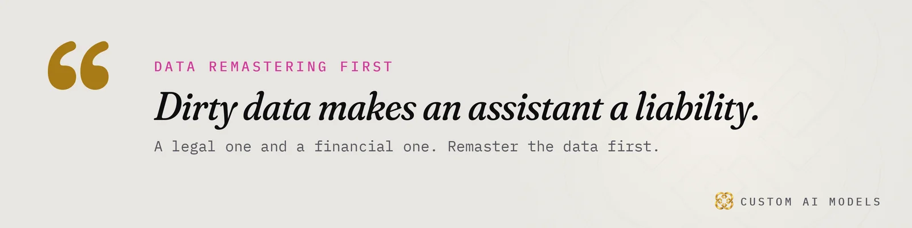
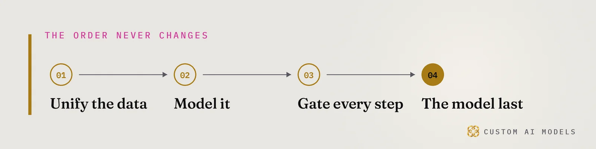
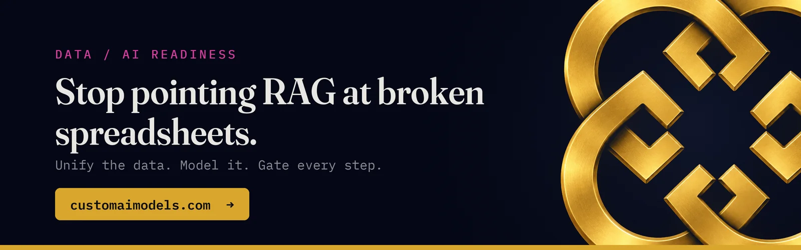

Custom AI Models
Custom AI Models Yeriko Vargas · Founder, Custom AI Models · Oct 2026
Yeriko Vargas · Founder, Custom AI Models · Oct 2026Short answer. GEO versus SEO comes down to what you win. SEO wins a position in a list of links. GEO wins a quoted passage inside one AI answer. Before you spend anything, verify crawl access, one canonical host, readable raw HTML, answer-first pages, consistent facts, and a logged list of test questions. Fix the data underneath first, then the pages, then measure.
What changes in GEO vs SEO when an AI answers instead of a list of links?
GEO, generative engine optimization, aims to get your page quoted inside a single written answer. SEO aims to rank your page in a list of links. The engine picks a few passages, rewrites them and names a few sources. Often the reader never clicks. So the unit of work shifts from the page to the passage, and the win shifts from position to being cited.
Nobody outside the labs has the formula. Treat any agency that claims one as a red flag. What you control is what the engine finds when it arrives. Most of that is old work: clean pages, a stable host, plain claims. Much of what is sold as GEO is SEO hygiene with a new label.
Two things carry over. Crawlable pages still matter, and so do trust signals. Two things are new. The engine wants passages that stand alone, and it wants facts that agree across every source it reads. A page built only for a click can fail both tests.

What should you verify before you spend a dollar on GEO?
Run this checklist before you pay anyone. Each line is a yes or no you can check yourself, with a browser or a short script. If a line fails, fix it before buying anything else. A vendor who skips these is selling you a layer on top of a cracked foundation.
- Crawl access: your
robots.txtadmits the AI crawlers you want in. - Canonical host: one address per page, every other variant redirects to it.
- Raw HTML: the text exists in the served page, not painted in later by JavaScript.
- Answer-first pages: the first lines under each heading answer that heading.
- Consistent facts: services, prices and names match on every page and every profile.
- Honest schema: markup repeats only what the page shows.
- A question list: a written set of questions you want to be named for.
Score each line. Any no is your first purchase, and it costs an afternoon, not a retainer.
Can an AI engine actually read your site?
Test it the dumb way. Fetch the page with curl and read what comes back. If your service list, your answer or your contact details are missing from that raw HTML, many crawlers never see them. Then check robots.txt and sitemap.xml. Pick one host and redirect the rest to it. Two hosts split the signal.
Look at robots.txt first. One blanket Disallow rule, left over from a staging launch, can hide a whole site. Then view the page source. If you see an empty div and a script tag, the crawler may see exactly that.
We wrote the full lift-ready list in Engines cite pages they can lift. Start there for page structure. Come back here for the money questions.

Why does your own data decide whether GEO pays?
An engine repeats what it finds. If your pricing page, your PDF spec sheet and your sales deck disagree, the answer will disagree too, and a buyer will quote the wrong version back to you. Custom AI Models starts at this layer. Unify the data, model it, gate every step, and bring in the model last. I have spent 8.5 years in data, and that order has never changed.
A model cannot fix this by being smarter. Ask any vendor which system holds the truth for each fact you want quoted. If they cannot name it, you are buying a coat of paint.
We build Python pipelines on the client's own data. They pull from your systems of record, check each record against a JSON schema, and publish one source of truth that your website and any assistant both read. A record that fails the schema stops the run with a non-zero exit code. The failure is loud, which is the point. The longer version is in Your AI didn't fail. Your data did.
How do you prove GEO worked before the next invoice?
Write the questions down, ask the engines on a schedule, and log every answer. A small Python job can run a fixed list of questions, save each raw response with a date, and check with plain string matching whether your business name or URL appears. That is deterministic validation. No vibes. After a change, run it again and compare. Nobody can promise a result, so insist on the log.
- Write the list of questions your buyers type.
- Run it once and save the answers as your baseline.
- Change one thing: a page, a fact, a redirect.
- Run the list again and diff against the baseline.
- Keep the change only if the log says it helped.
This is telemetry for search. Without it you are paying for a story. With it you see which fix moved the answer, and which spend did nothing. Engines change their behavior without notice, so run the job on a schedule, not once.
Questions people ask
Is GEO replacing SEO?
No. Engines still crawl and read the open web, so SEO groundwork feeds GEO. What shifts is the goal: a cited passage instead of a ranked link. Run one set of pages, keep them crawlable, and measure citations next to traffic. Two budgets for the same pages is a sign someone is upselling you.
How long does GEO take to show results?
No honest number exists. Engines refresh on their own schedules, and nobody outside the labs publishes them. Build a baseline log first, change one thing at a time, and re-run your question list. Your own log will tell you faster than any vendor promise, and it will show which change earned the result.
What data do I need before AI search or an assistant works for my business?
One source of truth for each fact you want quoted: services, prices, hours, specs, policies. Give each fact an owner. Export, deduplicate and validate against a schema. Dirty records make an assistant a legal and financial liability, because it will repeat the wrong version with confidence.
Can I run this checklist myself?
Most of it, yes. Crawl access, host, raw HTML and the question log need a browser, curl and a spreadsheet. The part that earns an engineering budget is unifying scattered systems and putting validation gates between them. That is Python pipeline work, and it is where most demos quietly fall apart.
